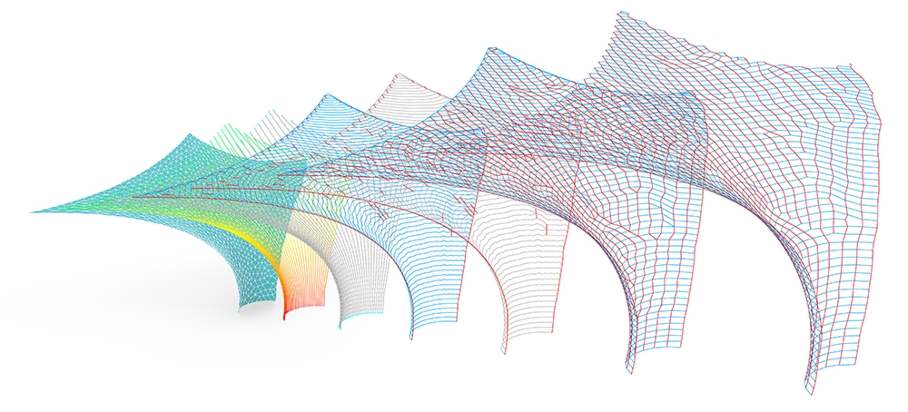

COCKATOO¶

Cockatoo is a prototypical open-source software toolkit for generating (3d-)knitting patterns from NURBS surface and mesh geometry.
It is implemented as a Python module for use within McNeel Rhinoceros 6 aswell as Grasshopper.
Yeah, yeah… Knitting… Rhino… Python… I get it. Just tell me how to install and use it! 1
Purpose & Origins¶
The purpose of this project is to enable Rhino and Grasshopper to automatically derive (3d-)knitting patterns for computerized knitting machines from NURBS surfaces and unstructured triangle meshes. The absence of such a freely available open-source toolkit marks the origin point for this project. Programming Cockatoo was only possible thanks to some brilliant research done by lots of other people. Please check the Sources & References section if you’re curious.
This open-source software prototype constitutes the practical part of my diploma project Knit Relaxation - Knit Membranes for Textile (Interior) Architecture (original german title: Knit Relaxation - Membrangestricke für Textile (Innen-)Architektur) in the product design department at Kunsthochschule Kassel.
Software Structure¶
Python Module¶
All datastructures, core logic and algorithms are defined in the
cockatoopython module.This module is developed to be compatible with IronPython (for more info, see the Pecularities section).
The RhinoCommon API is used to handle all geometric operations.
The
networkxmodule is used to handle all the necessary graph operations (for more info, see the Pecularities section).
Rhino Integration¶
The cockatoo module can be used from within Rhino.Python scripts as
well as from within Grasshopper through the GHPython scriptable
component.
Grasshopper Components¶
Cockatoo includes a set of Grasshopper components (UserObjects),
which provide a user interface to the underlying python module without
the need of scripting.
Extendability¶
The python module as well as the UserObjects are designed to be open for extension. Everything is open-source.
Pecularities¶
Development Environment¶
The RhinoPython and GHPython development environments are very, very special. I am not going to write in-depth about this here. Everybody who is working with these tools on a regular basis should have come accross their oddities. If not - most information about these topics is available in the Rhino Developer Docs.
Graph Library¶
To do all the juicy graph stuff, Cockatoo uses NetworkX. To be more specific, an older version - NetworkX 1.5 is used for… well, reasons. This specific networkx module was modified in some places and is therefore bundled with Cockatoo! Using a different version might be possible but may also lead to errors.
Partial Dependencies¶
Some of the UserObjects rely on Kangaroo 2. Since this is shipped with Rhino since Version 6, everything should work smoothly. The Kangaroo 2 installation should be found by the UserObjects automagically. If any hiccups occur, please let me know.
There is one UserObject that relies on Plankton being installed, although it’s just a small utility. If Plankton is already installed everything should be found automagically, otherwise you’d first have to install Plankton. If any hiccups occur with this, please also let me know.
Installation¶
1. Download release files¶
Go to releases and download the newest release
Unzip the downloaded archive. You should get the folders:
modulesandCockatoo.
2. Install python modules¶
Open the scripts folder of Rhino 6
On Windows:
C:\Users\%USERNAME%\AppData\Roaming\McNeel\Rhinoceros\6.0\scriptsOn Mac OSX:
~/Library/Application Support/McNeel/Rhinoceros/6.0/scripts
Move all the Content from inside the
modulesdirectory to this scripts folder.
3. Install Cockatoo UserObjects¶
Navigate to the Grasshopper UserObjects folder
On Windows:
C:\Users\%USERNAME%\AppData\Roaming\Grasshopper\UserObjectsOn Mac OSX:
~/Library/Application Support/McNeel/Rhinoceros/MacPlugIns/Grasshopper/UserObjectsAlternative: Open Rhino & Grasshopper and in the Grasshopper Window click on
File>Special Folders>User Object Folder
Move the whole
Cockatoodirectory to the UserObjects folder.
4. Unblock the new UserObjects!¶
Go into the
Cockatoofolder inside Grasshoppers UserObjects folderRight click onto the first UserObject and go to Properties
If the text This file came from another computer […] is displayed click on Unblock!
Unfortunately you have to do this for EVERY UserObject in the folder!
5. Restart Rhino & Grasshopper¶
If Rhino was running during the installation process, you’ll have to restart it for the changes to take effect!
Examples & Usage¶
If everything is installed correctly, you should be able to open the
example file provided in Examples. For a demo, you can also have a
look at the demonstration video.
For guidance on using the API provided through the python module directly, please have a look at the documentation
Testing & Contributing¶
You are invited to participate!¶
Contributing is easy as Pi (well…easier, actually). First off, Cockatoo needs software testing to find bugs and make it more robust. So just by trying out Cockatoo out of curiosity, you can actually help!
If you find a bug (which is very likely because they always sneak in somewhere) please tell me about it by submitting an issue so I can improve Cockatoo further.
Testing¶
A sad truth is that I currently don’t have access to a computerized knitting machine. As a consequence, it was not possible to actually test or verify a knitting pattern generated by Cockatoo in the real world, yet. If you have access to a machine and you would be willing to collaborate with me in testing, I would be more than happy!
Also, if you know a thing or two about computational knitting and find a fundamental (or minor) mistake in the workings of Cockatoo, please let me know. I’m always eager to learn from others and fix mistakes.
Code¶
If you’re willing to contribute to Cockatoo by writing new code or improving existing code, that’s great! Please have a look at the contribution guidelines.
Sources & References¶
This section states the most important sources used in writing this software. The full and proper list of sources is - of course - available in the written version of the diploma thesis.
Cherif, Chokri: Textile Werkstoffe für den Leichtbau. Techniken - Verfahren - Materialien - Eigenschaften.
CITAstudio: Textile. Light. Architecture. SOFT SPACES
Hagberg, Aric; Schult, Dan; Swart, Pieter: NetworkX 1.5
McCann, James; Albaugh, Lea; Narayanan, Vidya; Grow, April; Matusik, Wojciech; Mankoff, Jen; Hodgins, Jessica: A Compiler for 3D Machine Knitting
Narayanan, Vidya; Albaugh, Lea; Hodgins, Jessica; Coros, Stelian; McCann, James: Automatic Machine Knitting of 3D Meshes
Narayanan, Vidya; Wu, Kui; Yuksel, Cem; McCann, James: Visual Knitting Machine Programming
Popescu, Mariana; Rippmann, Matthias; van Mele, Tom; Block, Philippe: Automated Generation of Knit Patterns for Non-developable Surfaces
Popescu, Mariana: KnitCrete - Stay-in-place knitted formworks for complex concrete structures
Thomsen, Mette Ramsgaard; Tamke, Martin; Deleuran, Anders Holden; Tinning, Ida Katrine Friis; Evers, Henrik Leander; Gengnagel, Christoph; Schmeck, Michel: »Hybrid Tower, Designing Soft Structures«. In: Modelling behaviour. Design Modelling Symposium 2015, hrsg. von Mette Ramsgaard Thomsen, Martin Tamke, Christoph Gengnagel, Billie Faircloth und Fabian Scheurer. Cham/Heidelberg/New York/Dordrecht/London 2015
Ramsgaard Thomsen, Mette; Tamke, Martin; Ayres, Phil; Nicholas, Paul: CITA Complex Modelling, Toronto 2019
Van Mele, Tom; others, many: COMPAS: A framework for computational research in architecture and structures
Licensing¶
Original code is licensed under the MIT License.
NetworkX is licensed under the 3-clause BSD license which can be found in
licenses/networkx.Some code snippets from the COMPAS framework are used within this software. This code is licensed under the MIT License which can be found in
licenses/COMPAS.Some code snippets by Anders Holden Deleuran are used with permission. They originate from gists and the FAHS pipeline, kindly provided by Anders. This code is licensed under the Apache License 2.0 which can be found in
licenses/ahd.
Misc¶
[1] This is a hommage to David Ruttens delightful sense of humor which has changed many of my darker days for the better.